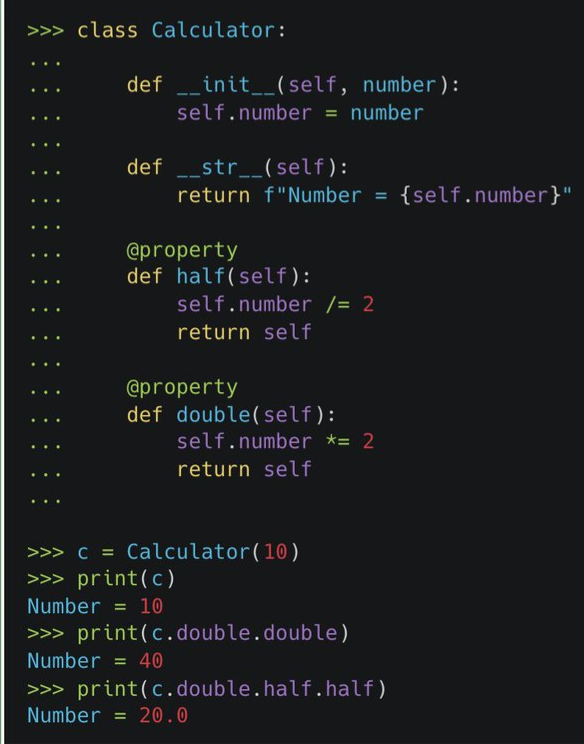
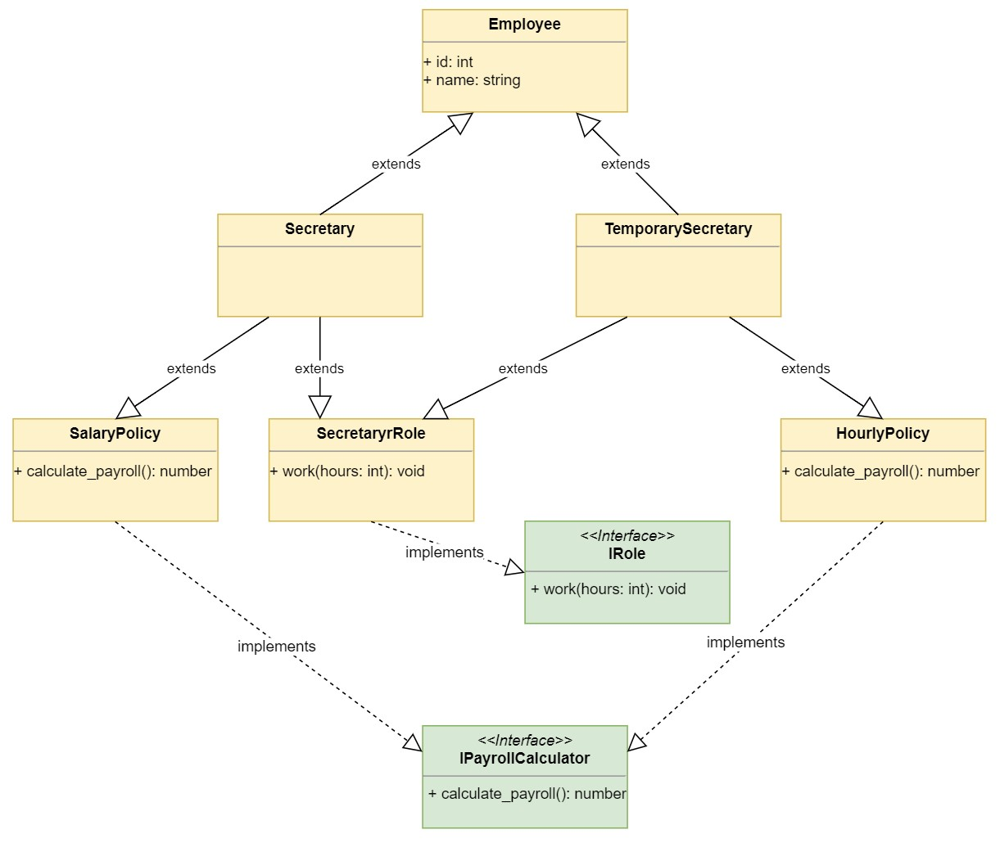
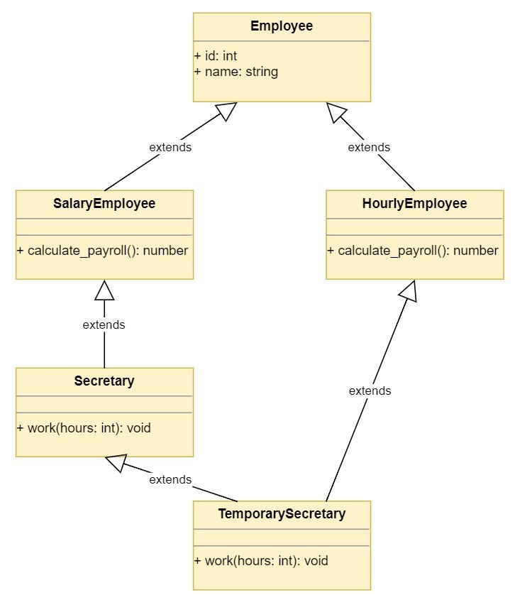
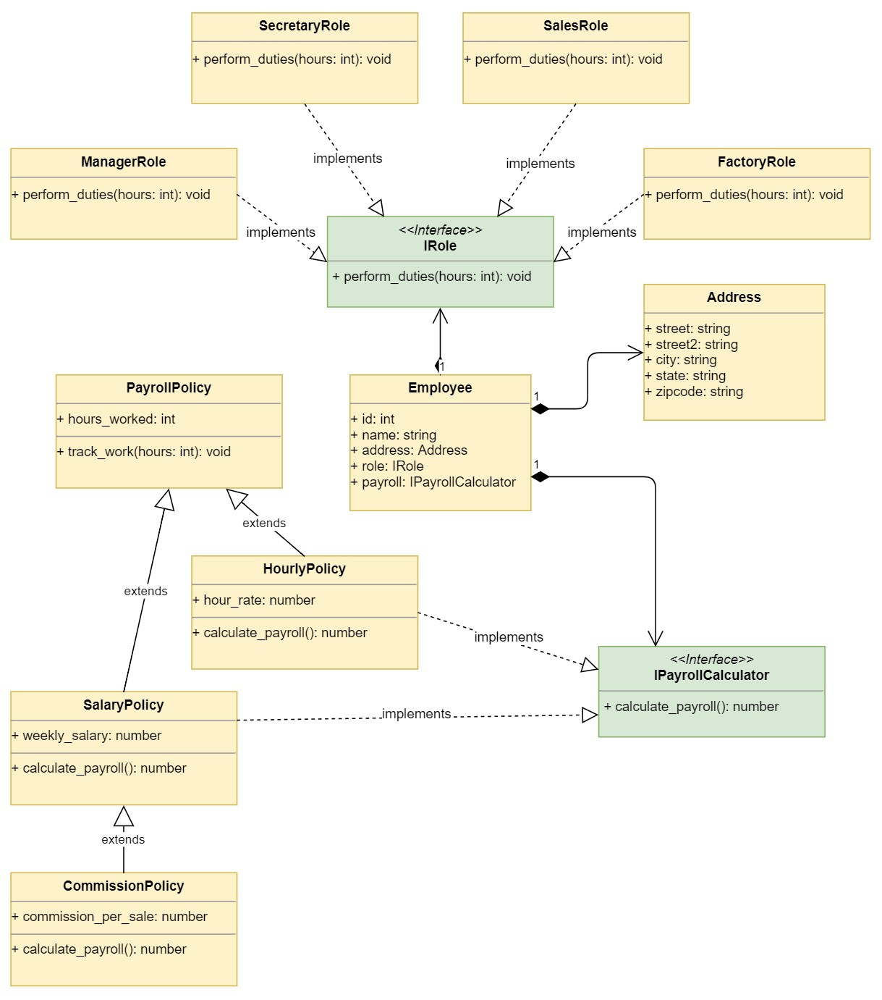
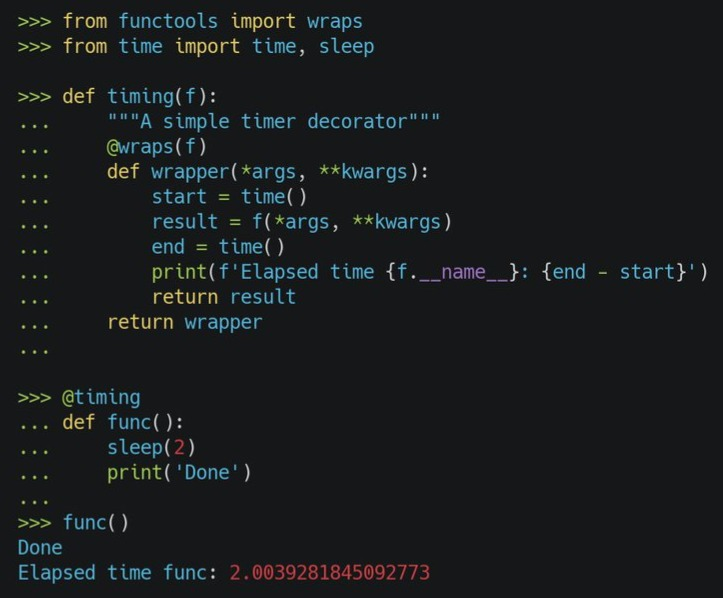

133 Python, Classes
TOC
- Misc
- Terms
- Methods
- Inheritance
- Composition
- Decorators
- Example: Function Timer
- Example: Multiple decorators for a function
- property
- staticmethod
- classmethod
- Custom Examples
- Multiprocessing Function Execution Time Limiter
- Retry (e.g. for an API)
- Cache Function Results
- Logging (e.g. ETL pipeline)
- Email Notification
- Examples
Misc
- When to use classes:
- When you have code and data that go together and need to keep track of the current state
- e.g. managing a bunch of students and grades
- When you see hierarchies, using classes leads to better code organization, less duplication, and reusable code.
- You can make a single change in the base class (parent) and all child classes pick up the change
- Example: Report class
- You can have a base class with shared attributes like report name, location and rows. But when you go into specifics like formats (xml, json, html), you could override a generate_report method in the subclass.
- Encapsulation
- When you want to separate external and internal interfaces in order to (ostensibly) hide internal code from the user.
- Keeps excess complexity from the user
- When you have code and data that go together and need to keep track of the current state
- used camel case for class names
- use snake case for methods and attributes
- always use self as the first argument of a method
- write docstrings for your classes so that your code is more understandable to potential collaborators and future you.
- Create a Class that allows method chaining
return selfis what allows the chaining to happen
Terms
- Class inheritance - mechanism by which one class takes on the attributes and methods of another
class Employee:
def __init__(self, name, salary=0):
self.name = name
self.salary = salary__init__()is a constructor method. It assigns (or initializes) attributes that every object (aka instance) for this class must have.selfis the 1st argument in any method definition. It refers to a particular instance.self.salary = salarycreates an attribute called salary and assigns to it the value of the salary parameter (default set to 0)- Class attributes are attributes that have the same value for all class instances.
- Accessing a class attribute
# access first employee's name attribute
e1.name
# access second employee's salary attribute
e2.salary- Instance Attributes - Values for these attribute depend on the instance (e.g. they vary depending on each employee)
- Instantiate - creating a new object from a class
e1 = Employee("yyy", 5000) # name, salary
e2 = Employee("zzz", 8000)Methods
- Instance method - functions that can only be called by an object from this class
- similar to regular functions with the difference of having “self” as the first parameter
class Employee:
def __init__(self, name, salary=0):
self.name = name
self.salary = salary
#Instance method
def give_raise(self, amount):
self.salary += amount
return f"{self.name} has been given a [{amount}]{style='color: #990000'} raise"
# calling an instance method
# instantiate object first
object = MyClass()
object.method()- Magic methods (aka dunder or special methods) -
- Aren’t meant to be called, usually invoked by an operation
- Examples
__add__invoked bymyclass() + myclass()__str__invoked bystr(myclass())- Example
- Examples
- Aren’t meant to be called, usually invoked by an operation
class Address:
def __init__(self, street, city, state, zipcode, street2=''):
self.street = street
self.street2 = street2
self.city = city
self.state = state
self.zipcode = zipcode
def __str__(self):
lines = [self.street]
if self.street2:
lines.append(self.street2)
lines.append(f'{self.city}, {self.state} {self.zipcode}')
return '\n'.join(lines)
>>> address = Address('55 Main St.', 'Concord', 'NH', '03301')
>>> print(address)
55 Main St.
Concord, NH 03301- Can be an instance or class type of method
from datetime import datetime, timedelta
from typing import Iterable
from math import ceil
class DateTimeRange:
def __init__(self, start: datetime, end_:datetime, step:timedelta = timedelta(seconds=1)):
self._start = start
self._end = end_
self._step = step
def __iter__(self) -> Iterable[datetime]:
point = self._start
while point < self._end:
yield point
point += self._step
def __len__(self) -> int:
return ceil((self._end - self._start) / self._step)
def __contains__(self, item: datetime) -> bool:
mod = divmod(item - self._start, self._step)
return item >= self._start and item < self._end and mod[1] == timedelta(0)
def __getitem__(self, item: int) -> datetime:
n_steps = item if item >= 0 else len(self) + item
return_value = self._start + n_steps * self._step
if return_value not in self:
raise IndexError()
return return_value
def __str__(self):
return f"Datetime Range [{self._start}, {self._end}) with step {self._step}"- Class DateTimeRange has methods that allows you to treat a date-range object like a list
- Just for illustration. Think methods in pandas can do this stuff
__iter__method - generator function that creates one element at a time, yields it to the caller, and allows the caller to process it- Example creates datetime ranges instead of numeric ranges
__len__- find out the number of elements that are part of your range__getitem__- uses indexing syntax to retrieve entries from your objects__contains__- checks if an element is part of your range. T/Fdivmodreturns quotient and remainder.
- Using these magic methods
my_range = DateTimeRange(datetime(2021,1,1), datetime(2021,12,1), timedelta(days=12)) #instantiate
print(my_range) # __init__ or maybe __str__
for r in my_range: # __iter__
do_something(r)
len(my_range) # __len__
my_range[-2] in my_range # __getitem__ (neg indexing), __contains__`` Inheritance 
- Some notes from this much more detailed example (article)
- Shows how to combine different scripts (aka modules) and diagram the hierarchies
- Some good debugging too
- Running
<class>.__mro__will show you the order of inheritance.
- Running
- Inheritance models what is called an “is a” relationship. This means that when you have a Derived (aka subclass, child) class that inherits from a Base (aka super, parent) class, you created a relationship where Derived is a specialized version of Base.
- Child classes inherit all of their parent’s attributes and methods, but they can also define their own attributes and methods.
- Can override or extend parent class attributes and methods
class Manager(Employee):
pass
m1 = Manager("aaa", 13000)Manager is the child class and Employee is the parent class (see top)
Child classes don’t require a constructor method for an object to be created
Extending the instance attributes of the parent class
class Manager(Employee):
def __init__(self, name, salary=0, department):
Employee.__init__(self, name, salary=0)
self.department = departmentContructor method for the child class with the new attribute, “department,” in the arguments.
Parent class (Employee) constructor method is called and a new attribute, department, is defined.
super()
- Alternative way of extending instance attributes through inheritance
- Example
class Rectangle:
def __init__(self, length, width):
self.length = length
self.width = width
def area(self):
return self.length * self.width
def perimeter(self):
return 2 * self.length + 2 * self.width
class Square(Rectangle):
def __init__(self, length):
super().__init__(length, length)
class Cube(Square):
def surface_area(self):
face_area = super().area()
return face_area * 6
def volume(self):
face_area = super().area()
return face_area * self.length
>>> cube = Cube(3)
>>> cube.surface_area()
54
>>> cube.volume()
27class Cube inherits from Square and extends the functionality of .area() (inherited from the Rectangle class through Square) to calculate the surface area and volume of a Cube instance Also notice that the Cube class definition does not have an .__init__(). Because Cube inherits from Square and .__init__() doesn’t really do anything differently for Cube than it already does for Square, you can skip defining it, and the .__init__() of the other child class (Square) will be called automatically.
super(Square, self).__init__(length, length)is equivalent to calling super without parameters (see above example)Using
super(Square, self).area()in class Cube. Setting the 1st parameter to Square instead of Cube causes super() to start searching for a matching method (in this case, .area()) at one level above Square in the instance hierarchy, in this case Rectangle.- If Square had an .area method, but you wanted to use Rectangle’s instead, this would be a way to do that.
Note another difference between using super() and using the class name (e.g. the first example) — “self” is NOT one of the args in super()
Example: Child class of two separate hierarchies
# Super class
class Rectangle:
def __init__(self, length, width, **kwargs):
self.length = length
self.width = width
super().__init__(**kwargs)
def area(self):
return self.length * self.width
def perimeter(self):
return 2 * self.length + 2 * self.width
# Child class: Square class inherits from the Rectangle class
class Square(Rectangle):
def __init__(self, length, **kwargs):
super().__init__(length=length, width=length, **kwargs)
# Child class: Cube class inherits from Square and also from Rectangle classes
class Cube(Square):
def surface_area(self):
face_area = super().area()
return face_area * 6
def volume(self):
face_area = super().area()
return face_area * self.length
# Class (separate)
class Triangle:
def __init__(self, base, height, **kwargs):
self.base = base
self.height = height
super().__init__(**kwargs)
def tri_area(self):
return 0.5 * self.base * self.height
# Inherits from a child class (and super class) and a class
class RightPyramid(Square, Triangle):
def __init__(self, base, slant_height, **kwargs):
self.base = base
self.slant_height = slant_height
kwargs["height"] = slant_height
kwargs["length"] = base
super().__init__(base=base, **kwargs)
def area(self):
base_area = super().area()
perimeter = super().perimeter()
return 0.5 * perimeter * self.slant_height + base_area
def area_2(self):
base_area = super().area()
triangle_area = super().tri_area()
return triangle_area * 4 + base_area
>>> pyramid = RightPyramid(base=2, slant_height=4)
>>> pyramid.area()
20.0
>>> pyramid.area_2()
20.0- RightPyramid inherits from a child class (Square) and a class Triangle
- Since Square inherits from Rectangle, so does RightPyramid
- Triangle is a separate class not part of any hierarchy
- If there’s an .area method in either of the classes, then super will search hierarchy of the class listed first (Square), then the hierarchy of the class listed second (Triangle)
- Best practice to make sure each class has different method names.
- Each class with an
__init__constructor gets asuper().__init__()and**kwargsadded to its args- Which is every class sans Cube. If Cube was inherited by a class, I think it would require an __init__ constructor and the super().__init__(**kwargs) expression.
- Without doing this, calling .area_2() in RightPyramid will give us an AttributeError since .base and .height don’t have any values. (don’t completely understand this explanation)
- kwarg flow through
super().__init__()- In RightPyramid __init__, slant_height and base values are assigned to height and length keys in the kwargs dict
- super() passes base and the kwargs dict up to Square and Triangle
- Triangle uses height from kwargs and base
- Square uses length from kwargs
- Square passes length to Rectangle as values for both width and length
- All classes now have the argument values necessary for their functions to work.
- Now RightPyramid can call those other classes’ methods (e.g. .area and .perimeter from Rectangle and tri_area from Triangle)
- I believe since every class has **kwargs arg in their super().__init__, each has every value in the kwarg dict even if they don’t need it.
- So probably possible to add functions to those classes that would use those values
- Example: Using super with method other than __init__
class SalaryPolicy:
def __init__(self, weekly_salary):
self.weekly_salary = weekly_salary
def calculate_payroll(self):
return self.weekly_salary
class CommissionPolicy(SalaryPolicy):
def __init__(self, weekly_salary, commission):
super().__init__(weekly_salary)
self.commission = commission
def calculate_payroll(self):
fixed = super().calculate_payroll()
return fixed + self.commissionIn CommissionPolicy’s calculate_payroll, super() accesses SalaryPolicy’s calculate_payroll method to get the weekly_salary value
Diamond Problem
- Appears when you’re using multiple inheritance and deriving from two classes that have a common base class.
- This can cause the wrong version of a method to be called.
- e.g. TemporarySecretary uses multiple inheritance to derive from two classes that ultimately also derive from Employee. This causes two paths to reach the Employee base class, which is something you want to avoid in your designs.
- Appears when you’re using multiple inheritance and deriving from two classes that have a common base class.
Mixin Class
- Operates the same as Inheritance, but since it only provides simple behavior(s), it is easy to reuse with other classes without causing problems
- Example: Take certain class attributes and create a dict
# In representations.py
class AsDictionaryMixin:
def to_dict(self):
return {
prop: self._represent(value)
for prop, value in self.__dict__.items()
if not self._is_internal(prop)
}
def _represent(self, value):
if isinstance(value, object):
if hasattr(value, 'to_dict'):
return value.to_dict()
else:
return str(value)
else:
return value
def _is_internal(self, prop):
return prop.startswith('_')to_dictis a dictionary comprehensionmydict = {key:val for key, val in dict}- Returns a dict with key:value (e.g. property (aka attribute):value) pairs from a class’s __dict__ if the property (prop) doesn’t have an underscore
_representmakes sure the “value” is a value and not object_is_interna1checks whether the attribute has an underscore in the nameApply the Mixin class to any class the same way as using Inheritance
class Employee(AsDictionaryMixin):
def __init__(self, id, name, address, role, payroll):
self.id = id
self.name = name
self.address = address
self._role = role
self._payroll = payrollAsDicitionaryMixin is used as an arg to the class
“self._role” and “self._payroll” have underscores which tells
to_dictnot to include them in the resulting dictionaryNot important to using a mixin class but note that “address” is from the Address class via composition (see below). Therefore the Address class would also need to inherit AsDictionaryMixin for this to work
Utilize
import json
def print_dict(d):
print(json.dumps(d, indent=2))
for employee in EmployeeDatabase().employees:
print_dict(employee.to_dict())print_dicttakes the dict output of employee._to_dict and converts it to a json format
Composition 
Notes from [Inheritance and Composition: A Python OOP Guide](https://realpython.com/inheritance-composition-python/)- Composition models a “has a” relationship. In composition, a class known as composite contains an object of another class known to as component.
- Composition design is typically more flexible than inheritance and is preferable to Inheritance
- Prevents “class explosion”
- For complex projects, too many classes can lead to conflicts and errors because of the inevitable complex network of classes that are connected to each other.
- You change your program’s behavior by providing new components that implement those behaviors instead of adding new classes to your hierarchy.
- Only loose class connections in composition
- Changes to the component class rarely affect the composite class, and changes to the composite class never affect the component class
- Prevents “class explosion”
- tl;dr
- Classes are written in different py scripts and imported as “modules” in another script.
- Attribute(s) from a component class (e.g. Address) are used in the composite class (e.g. Employee)
- Then a composite class attribute object is assigned to the instantiated composite class’s empty attribute
- This is the magic. One class’s attribute can be used as input into another class’s attribute without being tightly coupled to that other class (aka inheritance).
- That input isn’t a value. It’s class type object.
- See Utilize code block below
- This is the magic. One class’s attribute can be used as input into another class’s attribute without being tightly coupled to that other class (aka inheritance).
- Example: composition through __init__ attributes
# In contacts.py
# Component class
class Address:
def __init__(self, street, city, state, zipcode, street2=''):
self.street = street
self.street2 = street2
self.city = city
self.state = state
self.zipcode = zipcode
# In employees.py
# Composite class
class Employee:
def __init__(self, id, name):
self.id = id
self.name = name
self.address = None
# ManagerRole and SalaryPolicy are classes from different modules
class Manager(Employee, ManagerRole, SalaryPolicy):
def __init__(self, id, name, weekly_salary):
SalaryPolicy.__init__(self, weekly_salary)
super().__init__(id, name)- You would import these two modules into a third script and do stuff (see next code block)
- You initialize the Address.address attribute to “None” for now to make it optional, but by doing that, you can now assign an Address to an Employee.
- i.e. the attributes of an Address instance from its __init__ are now available to be assigned to a Employee instance.
- Manager is a child class of multiple other classes (inheritance) including Employee and therefore gets an .address attribute
- Aside: ManagerRole doesn’t have an __init__ (i.e. no attributes), so I’m not sure why super() is used here
- why not just use Employee.__init__?
- I would’ve thought that ManagerRole would’ve required the same inputs as Employee, so super() is used here to cover both at the same time.
- But that’s not the case, MangerRole is there just for it’s method and not it’s attributes
- Does being able to use ManageRole methods require super() (i.e. necessary for Inheritance)?
- Aside: ManagerRole doesn’t have an __init__ (i.e. no attributes), so I’m not sure why super() is used here
- Utilize
manager = employees.Manager(1, 'Mary Poppins', 3000)
manager.address = contacts.Address(
'121 Admin Rd',
'Concord',
'NH',
'03301'
)
# ... create other intances of different jobs in the company
# guess this would be like a json
employees = [
manager,
secretary,
sales_guy,
factory_worker,
temporary_secretary,
]
# do work with the list class objs
productivity_system = productivity.ProductivitySystem()
productivity_system.track(employees, 40)The Address class instance is assigned to the .address attribute of the Manager instance (which gets its .address attribute from Employee)
Example: composition through a function arg
# In hr.py
class PayrollSystem:
def calculate_payroll(self, employees):
print('Calculating Payroll')
print('===================')
for employee in employees:
print(f'Payroll for: {employee.id} - {employee.name}')
print(f'- Check amount: {employee.calculate_payroll(){style='color: #990000'}[}]{style='color: #990000'}')
if employee.address:
print('- Sent to:')
print(employee.address)
print('')
payroll_system = hr.PayrollSystem()
payroll_system.calculate_payroll(employees)- The input for calculate_payroll, employees, is a list of instantiated Employee class objects in the previous code chunk.
- Name of the class is iterated and represents each instance
- Has attributes and methods available
- Example: Other module classes used as attributes
# In employees.py
from productivity import ProductivitySystem
from hr import PayrollSystem
from contacts import AddressBook
class EmployeeDatabase:
def __init__(self):
self._employees = [
{
'id': 1,
'name': 'Mary Poppins',
'role': 'manager'
},
{
'id': 2,
'name': 'John Smith',
'role': 'secretary'
}
]
self.productivity = ProductivitySystem()
self.payroll = PayrollSystem()
self.employee_addresses = AddressBook()
@property
def employees(self):
return [self._create_employee(**data) for data in self._employees]
def _create_employee(self, id, name, role):
address = self.employee_addresses.get_employee_address(id)
employee_role = self.productivity.get_role(role)
payroll_policy = self.payroll.get_policy(id)
return Employee(id, name, address, employee_role, payroll_policy)- ProductivitySystem, PayrollSystem, AddressBook are classes imported from various modules
- As attributes, these classes’ methods are used in the _create_employee function
- Return invokes the Employee class with values obtained by the various class methods
- Employee class (not shown in this block) is already present in this module so it doesn’t have to be imported.
Decorators
- They can add additional features to a function
- Useful because you don’t have to refactor downstream code
- functions that take a function as input
- See use cases throughout note and check bkmks
- @
is placed above a “decorated” function - Example
@decorator_1
def temperature():
return tempCalling
temperature()is actually callingdecorator_1(temperature())Example: add additional features to a function
- Adds a timer to a function
Example: Multiple decorators for a function
@log_execution
@timing
def my_function(x, y):
time.sleep(1)
return x + ySee Custom Examples for the “log_execution” decorator
property
property(fget=None, fset=None, fdel=None, doc=None)- Built-in decorator
- Constitutes a family of decorators
- @property: Declares the method as a property.
- fget - function to get value of the attribute
- @
.setter: Specifies the setter method for a property that sets the value to a property. - fset - function to set value of the attribute
- must have the value argument that can be used to assign to the underlying private attribute
- @
.deleter: Specifies the delete method as a property that deletes a property. - fdel - function to delete the attribute
- must have the value argument that can be used to assign to the underlying private attribute
- @property: Declares the method as a property.
- Example
# Using @property decorator
class Celsius:
def __init__(self, temperature=0):
self._temperature = temperature
def to_fahrenheit(self):
return (self._temperature * 1.8) + 32
# decorators
# attribute getter
@property
def temperature(self):
print("Getting value...")
return self._temperature
# also adds constraint to the temperature input
@temperature.setter
def temperature(self, value):
print("Setting value...")
if value < -273.15:
raise ValueError("Temperature below -273 is not possible")
self._temperature = value
@temperature.deleter
def temperature(self, value):
print("Deleting value...")
del self._temperature
>> human = Celsius(37)
Setting value...
>> print(human.temperature)
Getting value...
37
>> print(human.to_fahrenheit())
Getting value...
98.60000000000001
>> del human.temperature
Deleting value...
>> coldest_thing = Celsius(-300)
Setting value...
Traceback (most recent call last):
File "", line 29, in
File "", line 4, in __init__
File "", line 18, in temperature
ValueError: Temperature below -273 is not possible.deleter didn’t work for me and neither did the conditional. Don’t my python version or what
Class method - method that is bound to the class and not the object (aka instance) of the class.
- Instance attributes cannot be referred to with this method
- Can modify the class state that applies across all instances of the class
- Use Cases
- To create new instances of the class without going trhough its normal
__init__ - To create a class instance that requires some async calls when instantiated, since
__init__cannot be async.
- To create new instances of the class without going trhough its normal
- Starts with a “classmethod” decorator
class MyClass:
@classmethod
def classmethod(cls):
return 'class method called', cls- Calling a class method vs an instance method
# calling a class method
# no instantiation
MyClass.classmethod()
# calling an instance method
# instantiates object first
object = MyClass()
object.method()- Static method - method bound to the class instance, not the class itself.
- Does not take the class as a parameter.
- It cannot access or modify the class at all.
- Starts with a “staticmethod” decorator
class Person:
def __init__(self, name, age):
self.name = name
self.age = age
@staticmethod
def isAdult(age):
return age > 18isAdult(age) function doesn’t require the usual self argument, so it couldn’t reference the class even if it wanted to.
Most often used as utility functions that are completely independent of a class’s state
See classmethod decorator for details on calling this method
Using functools and decorators
from functools import singledispatch
@singledispatch
def process_data(data):
raise NotImplementedError(f"Type {type(data){style='color: #990000'}[}]{style='color: #990000'} is unsupported")
@process_data.register
def process_dict(data: dict):
print("Dict is processed")
@process_data.register
def process_list(data: list):
print("List is processed")- Custom Examples
- Multiprocessing Function Execution Time Limiter
import multiprocessing
from functools import wraps
class TimeExceededException(Exception):
pass
## PART 1
def function_runner(*args, **kwargs):
"""Used as a wrapper function to handle
returning results on the multiprocessing side"""
send_end = kwargs.pop("__send_end")
function = kwargs.pop("__function")
try:
result = function(*args, **kwargs)
except Exception as e:
send_end.send(e)
return
send_end.send(result)
@parametrized
def run_with_timer(func, max_execution_time):
@wraps(func)
def wrapper(*args, **kwargs):
recv_end, send_end = multiprocessing.Pipe(False)
kwargs["__send_end"] = send_end
kwargs["__function"] = func
## PART 2
p = multiprocessing.Process(target=function_runner, args=args, kwargs=kwargs)
p.start()
p.join(max_execution_time)
if p.is_alive():
p.terminate()
p.join()
raise TimeExceededException("Exceeded Execution Time")
result = recv_end.recv()
if isinstance(result, Exception):
raise result
return result
return wrapperFrom Limiting Python Function Execution Time with a Parameterized Decorator via Multiprocessing
Retry (e.g. for an API)
import time
from functools import wraps
def retry(max_tries=3, delay_seconds=1):
def decorator_retry(func):
@wraps(func)
def wrapper_retry(*args, **kwargs):
tries = 0
while tries < max_tries:
try:
return func(*args, **kwargs)
except Exception as e:
tries += 1
if tries == max_tries:
raise e
time.sleep(delay_seconds)
return wrapper_retry
return decorator_retry
@retry(max_tries=5, delay_seconds=2)
def call_dummy_api():
response = requests.get("https://jsonplaceholder.typicode.com/todos/1")
return responseTries to get an API response. If it fails, we retry the same task 5 times. Between each retry, we wait for 2 seconds.
Cache Function Results
def memoize(func):
cache = {}
def wrapper(*args):
if args in cache:
return cache[args]
else:
result = func(*args)
cache[args] = result
return result
return wrapper
@memoize
def fibonacci(n):
if n <= 1:
return n
else:
return fibonacci(n-1) + fibonacci(n-2)Uses a dictionary, stores the function args, and returns values. When we execute this function, the decorated will check the dictionary for prior results. The actual function is called only when there’s no stored value before.
Using a dictionary to hold previous execution data is a straightforward approach. However, there is a more sophisticated way to store caching data. You can use an in-memory database, such as Redis.
Logging (e.g. ETL pipeline)
import logging
import functools
logging.basicConfig(level=logging.INFO)
def log_execution(func):
@functools.wraps(func)
def wrapper(*args, **kwargs):
logging.info(f"Executing {func.__name__}")
result = func(*args, **kwargs)
logging.info(f"Finished executing {func.__name__}")
return result
return wrapper
@log_execution
def extract_data(source):
# extract data from source
data = ...
return data
@log_execution
def transform_data(data):
# transform data
transformed_data = ...
return transformed_data
@log_execution
def load_data(data, target):
# load data into target
...
def main():
# extract data
data = extract_data(source)
# transform data
transformed_data = transform_data(data)
# load data
load_data(transformed_data, target)- output
INFO:root:Executing extract_data
INFO:root:Finished executing extract_data
INFO:root:Executing transform_data
INFO:root:Finished executing transform_data
INFO:root:Executing load_data
INFO:root:Finished executing load_data- Email Notification
import smtplib
import traceback
from email.mime.text import MIMEText
def email_on_failure(sender_email, password, recipient_email):
def decorator(func):
def wrapper(*args, **kwargs):
try:
return func(*args, **kwargs)
except Exception as e:
# format the error message and traceback
err_msg = f"Error: {str(e){style='color: #990000'}[}]{style='color: #990000'}\n\nTraceback:\n{traceback.format_exc(){style='color: #990000'}[}]{style='color: #990000'}"
# create the email message
message = MIMEText(err_msg)
message['Subject'] = f"{func.__name__} failed"
message['From'] = sender_email
message['To'] = recipient_email
# send the email
with smtplib.SMTP_SSL('smtp.gmail.com', 465) as smtp:
smtp.login(sender_email, password)
smtp.sendmail(sender_email, recipient_email, message.as_string())
# re-raise the exception
raise
return wrapper
return decorator
@email_on_failure(sender_email='your_email@gmail.com', password='your_password', recipient_email='recipient_email@gmail.com')
def my_function():
# code that might failExamples
- Transforms variables by logging, can add 1 if necessary, back-transform
from sklearn.base import BaseEstimator, TransformerMixin
from sklearn.preprocessing import PowerTransformer
class CustomLogTransformer(BaseEstimator, TransformerMixin):
def __init__(self):
self._estimator = PowerTransformer() # init a transformer
def fit(self, X, y=None):
X_copy = np.copy(X) + 1 # add one in case of zeroes
self._estimator.fit(X_copy)
return self
def transform(self, X):
X_copy = np.copy(X) + 1
return self._estimator.transform(X_copy) # perform scaling
def inverse_transform(self, X):
X_reversed = self._estimator.inverse_transform(np.copy(X))
return X_reversed - 1 # return subtracting 1 after inverse transform- Predictions for a Huggingface classifer
import sys
from transformers import pipeline
from typing import List
import numpy as np
from time import perf_counter
import logging
# Set up logger
logging.basicConfig(stream=sys.stdout, level=logging.INFO)
log = logging.getLogger(__name__)
class ZeroShotTextClassifier:
"""Class with only class methods"""
# Class variable for the model pipeline
classifier = None
@classmethod
def load(cls):
# Only load one instance of the model
if cls.classifier is None:
# Load the model pipeline.
# Note: Usually, this would also download the model.
# But, we download the model into the container in the Dockerfile
# so that it's built into the container and there's no download at
# run time (otherwise, each time we'll download a 1.5GB model).
# Loading still takes time, though. So, we do that here.
# Note: You can use a GPU here if needed.
t0 = perf_counter()
cls.classifier = pipeline(
"zero-shot-classification", model="facebook/bart-large-mnli"
)
elapsed = 1000 * (perf_counter() - t0)
log.info("Model warm-up time: %d ms.", elapsed)
@classmethod
def predict(cls, text: str, candidate_labels: List[str]):
assert len(candidate_labels) > 0
# Make sure the model is loaded
cls.load()
# For the tutorial, let's create
# a custom object from the huggingface prediction.
# Our prediction object will include the label and score
t0 = perf_counter()
# pylint: disable-next=not-callable
huggingface_predictions = cls.classifier(text, candidate_labels)
elapsed = 1000 * (perf_counter() - t0)
log.info("Model prediction time: %d ms.", elapsed)
# Create the custom prediction object.
max_index = np.argmax(huggingface_predictions["scores"])
label = huggingface_predictions["labels"][max_index]
score = huggingface_predictions["scores"][max_index]
return {"label": label, "score": score}# In employees.py
from hr import (
SalaryPolicy,
CommissionPolicy,
HourlyPolicy
)
from productivity import (
ManagerRole,
SecretaryRole,
SalesRole,
FactoryRole
)
class Employee:
def __init__(self, id, name):
self.id = id
self.name = name
class Manager(Employee, ManagerRole, SalaryPolicy):
def __init__(self, id, name, weekly_salary):
SalaryPolicy.__init__(self, weekly_salary)
super().__init__(id, name)
class Secretary(Employee, SecretaryRole, SalaryPolicy):
def __init__(self, id, name, weekly_salary):
SalaryPolicy.__init__(self, weekly_salary)
super().__init__(id, name)
class SalesPerson(Employee, SalesRole, CommissionPolicy):
def __init__(self, id, name, weekly_salary, commission):
CommissionPolicy.__init__(self, weekly_salary, commission)
super().__init__(id, name)
class FactoryWorker(Employee, FactoryRole, HourlyPolicy):
def __init__(self, id, name, hours_worked, hour_rate):
HourlyPolicy.__init__(self, hours_worked, hour_rate)
super().__init__(id, name)
class TemporarySecretary(Employee, SecretaryRole, HourlyPolicy):
def __init__(self, id, name, hours_worked, hour_rate):
HourlyPolicy.__init__(self, hours_worked, hour_rate)
super().__init__(id, name)# In productivity.py
class ProductivitySystem:
def track(self, employees, hours):
print('Tracking Employee Productivity')
print('==============================')
for employee in employees:
result = employee.work(hours)
print(f'{employee.name}: [{result}]{style='color: #990000'}')
print('')
class ManagerRole:
def work(self, hours):
return f'screams and yells for [{hours}]{style='color: #990000'} hours.'
class SecretaryRole:
def work(self, hours):
return f'expends [{hours}]{style='color: #990000'} hours doing office paperwork.'
class SalesRole:
def work(self, hours):
return f'expends [{hours}]{style='color: #990000'} hours on the phone.'
class FactoryRole:
def work(self, hours):
return f'manufactures gadgets for [{hours}]{style='color: #990000'} hours.'# In hr.py
class PayrollSystem:
def calculate_payroll(self, employees):
print('Calculating Payroll')
print('===================')
for employee in employees:
print(f'Payroll for: {employee.id} - {employee.name}')
print(f'- Check amount: {employee.calculate_payroll(){style='color: #990000'}[}]{style='color: #990000'}')
print('')
class SalaryPolicy:
def __init__(self, weekly_salary):
self.weekly_salary = weekly_salary
def calculate_payroll(self):
return self.weekly_salary
class HourlyPolicy:
def __init__(self, hours_worked, hour_rate):
self.hours_worked = hours_worked
self.hour_rate = hour_rate
def calculate_payroll(self):
return self.hours_worked * self.hour_rate
class CommissionPolicy(SalaryPolicy):
def __init__(self, weekly_salary, commission):
super().__init__(weekly_salary)
self.commission = commission
def calculate_payroll(self):
fixed = super().calculate_payroll()
return fixed + self.commissionhttps://www.programiz.com/python-programming/property